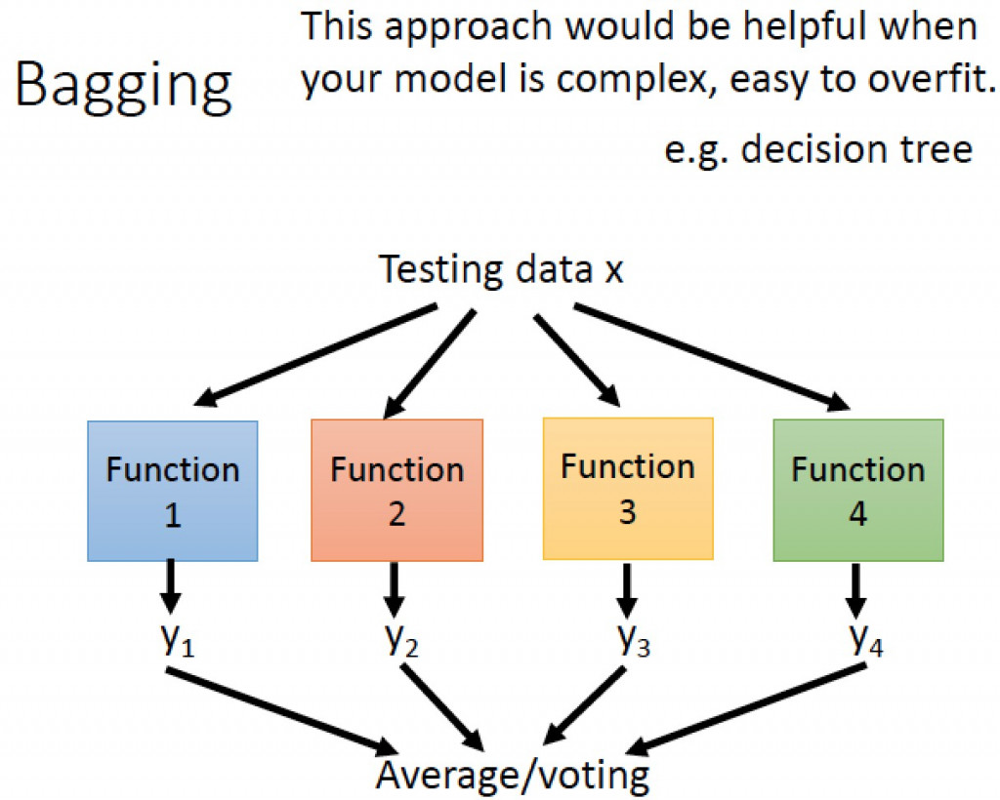
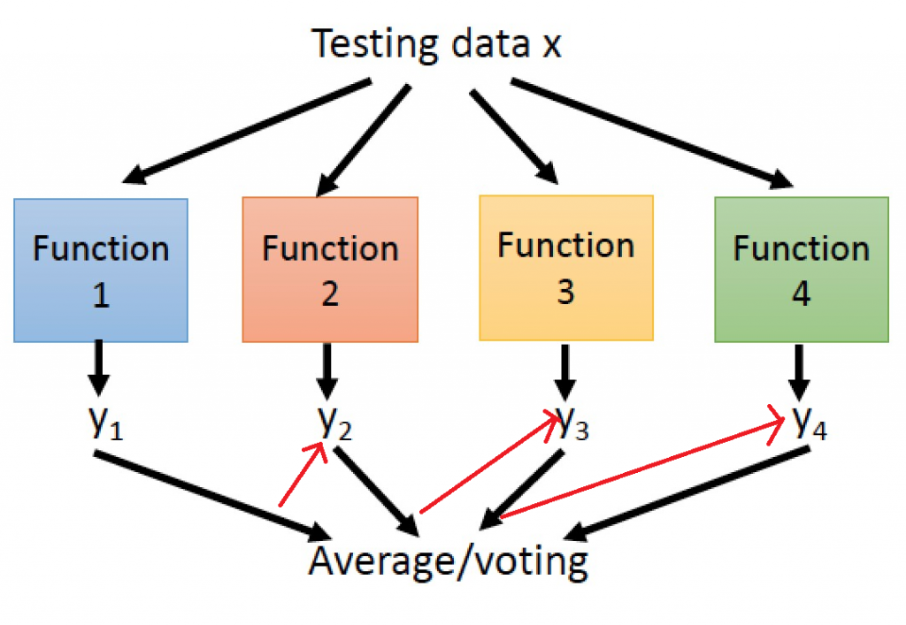
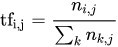
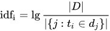

【day11】集成式學習 & 使用xgboost過濾垃圾郵件
發布日期: 2022-09-15 01:42:16
原文連結: https://ithelp.ithome.com.tw/articles/10290632
集成式學習(Ensemble learning)
集成式學習(Ensemble learning)是一種機器學習的學習方式，這種學習方式是將好幾個監督式學習的模型結合在一起，來獲得比使用單獨學習算法更好的效果。我們可以將它這學習方式分成三類，分別是引導聚集算法(Bagging)，提升方法(Boosting)，堆疊法(Stacking)。
引導聚集算法(Bagging)

圖片來源:李弘毅老師youtube影片
引導聚集算法(Bagging)模型是基於統計學中的自助法(Bootstrapping)來實現的，這種算法是將資料集隨機抽樣建立類群後，在重新抽取下一個類群，不斷的重複這個過程後，訓練每個類群的結果拿來做整合，如果是迴歸任務，則會做平均。舉一個例子來說:我們從一個球池裡面隨機抽取幾個球並記錄裡面球的特徵，之後在放回球池當中，在繼續重複這樣的動作，最後統計每一個類群裡球的特徵找到最好的結果，常見的例子有隨機森林(Random Forest)與決策樹(Decision Tree)。
提升方法(Boosting)

提升方法(Boosting)主要用來減小監督式學習中偏差與方差，一樣會先隨機抽取資料並分類，並通過迭代學習去計算這次模型的誤差(圖片中的紅色箭頭)，之後更新每個樣本被抽到的機率，若前一次分類錯誤率愈高，則權重愈大，最終將每次迭代的結果一起計算，常見的例子
極限梯度下降(Xgboost)、自適應增強(adaboost)。
堆疊法(Stacking)

圖片來源:https://www.geeksforgeeks.org/stacking-in-machine-learning-2/
堆疊法(Stacking)與引導聚集算法非常的相似，只差在一個是訓練部分資料，一個是訓練全部的資料，意思就是堆疊法訓練出獨立模型，當作最終模型的輸入特徵，並且訓練這個最終模型，藉由這種方式補足某個模型中缺失的資訊，增強迷型的效果。
過濾垃圾郵件
今天的目錄如下:
1.安裝函式庫與建立基本環境
2.資料前處理
3.訓練模型
4.測試與比較
安裝函式庫與建立基本環境
安裝函式庫
pip install xgboost
引用函式庫
import pandas as pd
import numpy as np
import random
from sklearn.feature_extraction.text import TfidfVectorizer
from sklearn.ensemble import RandomForestClassifier
from xgboost import XGBClassifier
from sklearn.tree import DecisionTreeClassifier
導入資料集
今天的資料集是SMSSpamCollection點我下載，這個資料集包含者垃圾郵件與真實有用的文件，今天要做的事就是抽取個文件的特徵與分類。我們先利用pandas讀取資料後在開始做資料前處理吧
data = pd.read_csv('SMSSpamCollection.csv')
資料前處理
還記得我說過機器學習與深度學習差距究竟在哪嗎?沒錯就是特徵抽取(Feature extraction)的部分，所以我們在資料處理時就需要加入這一個步驟，而在文本中有一個非常好用的技術叫做TF-IDF(Term Frequency-Inverse Document Frequency)，這個技術分成兩個部分詞頻（Term Frequecny）與逆向文件頻率（Inverse Document Frequency）。
我們來先看一下TF(詞頻)的公式計算

來源:https://zh.m.wikipedia.org/zh-tw/Tf-idf
在維基百科中是這樣解釋這個公式的
這樣是不是有一點複雜?其實TF的概念就是出現在文本中的次數越多次，代表這個單字越沒有獨特性所以計算起來的分數越低。所以這公式的的意思其實就是文字/文字在"單一文件"出現的次數。
那IDF(逆向文件頻率)是什麼呢?從名稱中可以了解他是一種反向的詞頻計算方式，他的概念與TF相反，在全部的文件中文字出現的越少，代表這文字該資料中是越有獨特性的。

https://zh.m.wikipedia.org/zh-tw/Tf-idf
所以這公式又能解讀成log10(文字/文字出現在"全部文件"次數)
為了使我們的資料能夠使用TF-IDF這項技術，所以我們需要先分類出垃圾郵件與真實使用到的郵件。
def classfier(data):
real, fake = [], []
for text, label in zip(data['sms'].values, data['class'].values):
if label == 'spam':
#記得將文字轉小寫
fake.append(text.lower())
else:
real.append(text.lower())
return fake,real
再來透過sklearn計算出這兩個文件TF-IDF分數，但在這邊要注意回傳的結果並不會是有順序的排列，所以我們還需要再另外寫一個function做氣泡序法(Bubble Sort)，將數值從大到小排列出來方便我們取用。
def getTopScore(data,text):
n = len(data)
while n > 1:
n-=1
for i in range(n):
#若右側資料比左邊大就交換
if data[i] < data[i+1]:
#文字
text[i], text[i+1] = text[i+1], text[i]
#數值
data[i], data[i+1] = data[i+1], data[i]
return text
之後就能用計算TF-IDF分數，並使用剛剛建立的function創建前200分數最高的文字，作為資料的特徵。
def getTfIdfText(fake,real,max_val = 200):
#宣告變數
vectorizer = TfidfVectorizer()
#計算TF-IDF
X = vectorizer.fit_transform([' '.join(fake),' '.join(real)]).toarray()
#計算分數最高的文字
fake_text_top = getTopScore(X[0],vectorizer.get_feature_names())
real_text_top = getTopScore(X[1],vectorizer.get_feature_names())
#回傳指定的最大結果
return fake_text_top[:max_val],real_text_top[:max_val]
接下來我們通過這200個字將我們的原始資料轉換成數字的格式，若是數字有出現我們就設定2，若沒有出現那就設定成1，若超過範圍我們就做zero padding。
def text2num(data, top):
result = []
for i in data:
tmp = []
for j in i.split(' '):
if j in top:
tmp.append(2)
else:
tmp.append(1)
if len(tmp)<80:
tmp = tmp + (80-len(tmp))*[0]
else:
tmp = tmp[:80]
result.append(tmp)
tmp = []
return result
接下來需要將資料拆分成測試數據與訓練數據來驗證程式的準確率，為了讓資料平均分布我們要先將真實郵件與垃圾郵件分別依照比例分割。
def splitData(data, split_rate=0.8):
cnt = int(len(data)*split_rate)
train_data=data[:cnt]
test_data =data[cnt:]
return train_data,test_data
f_train,f_test = splitData(fake_data)
r_train,r_test = splitData(real_data)
並將分割的數據組合起來並給予他們label，且需要打亂資料以免造成overfitting(前面學到的都是0後面學到都是1)
def randomShuffle(x_batch,y_batch,seed=100):
random.seed(seed)
random.shuffle(x_batch)
random.seed(seed)
random.shuffle(y_batch)
return x_batch,y_batch
train_data,train_label = randomShuffle(f_train+r_train,[0 for i in range(len(f_train))]+[1 for i in range(len(r_train))])
test_data,test_label = randomShuffle(f_test + r_test,[0 for i in range(len(f_test))]+[1 for i in range(len(r_test))])
這樣就完成資料前處理了
測試與比較
首先我們先使用決策樹、亂數森林與極限梯度下降法這三個機器學習模型訓練。
我們先快速的建立一下訓練的function
def train(train_data,train_label):
#決策樹模型
model_tree = DecisionTreeClassifier(criterion = 'entropy', max_depth=6, random_state=42)
#訓練
model_tree.fit(train_data, train_label)
#預測結果
y_hat_tree = model_tree.predict(train_data)
#亂樹森林模型
model_RF = RandomForestClassifier(n_estimators=10, max_depth=None,min_samples_split=2, random_state=0)
#訓練
model_RF.fit(train_data, train_label)
#預測結果
Y_hat_RF = model_RF.predict(train_data)
#極限梯度下降法模型
model_xgboost = XGBClassifier(n_estimators=100, learning_rate= 0.3)
#訓練
model_xgboost.fit(train_data, train_label)
#預測結果
Y_hat_xg = model_xgboost.predict(train_data)
#找到label大小作為準確率的分母
n=np.size(train_label)
#顯示機率
print('Accuarcy decisionTree: {:.2f}%'.format(sum(np.int_(y_hat_tree==train_label))*100./n))
print('Accuarcy RandomForest: {:.2f}%'.format(sum(np.int_(Y_hat_RF==train_label))*100./n))
print('Accuarcy XgBoost: {:.2f}%'.format(sum(np.int_(predicted==train_label))*100./n))
在這邊可以看到，在機器學習中建立模型的方式非常的簡單，只需要三步驟:宣告、訓練、看結果，就能完成訓練，且速度與深度學習相比快了好幾倍，因為我們只是通過公式的運算，而不是訓練神經網路，那我們來看一下最後訓練的結果。
訓練:
Accuarcy decisionTree: 88.31%
Accuarcy RandomForest: 99.42%
Accuarcy XgBoost: 98.95%
測試:
Accuarcy decisionTree: 88.98%
Accuarcy RandomForest: 99.46%
Accuarcy XgBoost: 99.46%
我們可以看到決策樹的效果相當的不好，最大的原因就是他每次規劃的路徑都是相同的這代表我們使用決策樹，最後的結果一定會overfitting。而亂樹森林則是以決策樹的方式加以改良，使用隨機抽取資料的方式，大幅增進最終的運算結果。今天的重頭戲xgoost可以看到在訓時準確率較低，但測試數據的準確率卻與亂樹森林相同，這是因我們們的資料比較單調以及數量較少的原因，若今天資料量較多xgboost能夠跌代計算出來的結果就會越準確，那差距就會與亂樹森林以及決策樹更大了。
課程中的程式碼都能從我的github專案中看到
https://github.com/AUSTIN2526/learn-AI-in-30-days